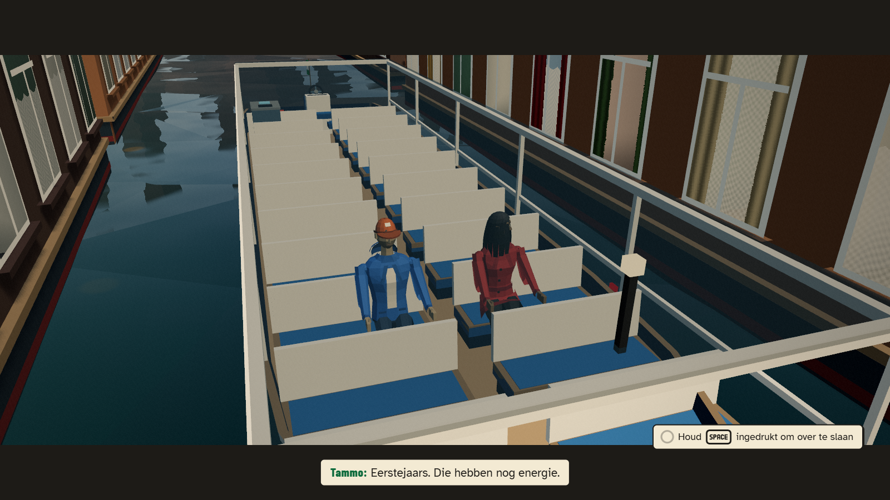
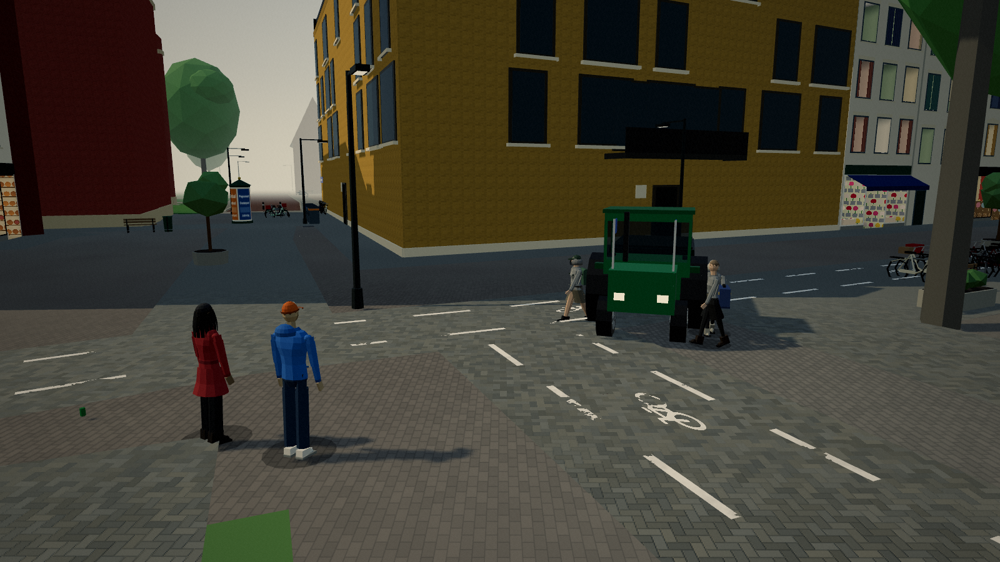

Rondvaartboot: een gesprek in de boot
Voor: het paar stond dwars op het dak-eind, hoofden door het glas, blik opzij. Na: zittend op de bank onder het dak, lijven naar de boeg, alleen het hoofd draait naar de spreker.


Branch cutscenes-visueel-23-11, stills uit een headless Chrome tegen de gestagede game (zelfde wereld, zelfde scènes; geen Electron). Ondertitels en "TEST" in de titelkaart horen bij het testscript.
M10.intro. Niet bekeken: de zitplaatsen op kleine boten, M30.outro, M01.intro, M01.outro, M15.outro en carriere-bezit-start (alleen de data is gemeten).Voor: het paar stond dwars op het dak-eind, hoofden door het glas, blik opzij. Na: zittend op de bank onder het dak, lijven naar de boeg, alleen het hoofd draait naar de spreker.
Voor: een hoge opname waarop het paar op de punt van de boeg staat (half in het water). Na: op de bank, camera onder het dak.


Voor: de camera stond op 1,5 m en kapte de hoofden af. Na: ruimer en iets hoger, hoofden en schouders in beeld, het paar net voor het dak. De reling uit de regie bestaat nog niet in het bootmodel (open punt 2 in CUTSCENE-ISSUES-23-11.md).


Voor: ze begonnen midden in de limo, alleen hun voeten kwamen eronder uit. Na: ze stappen aan de zijkant uit en lopen om de neus heen.

